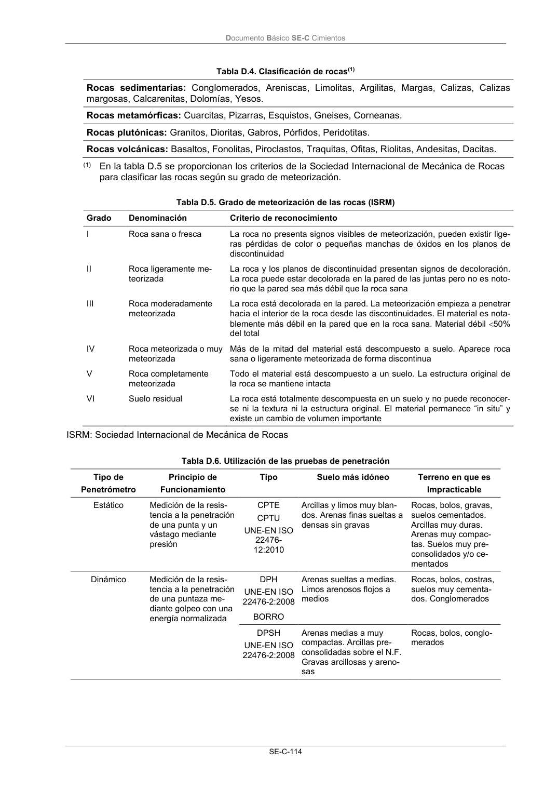

DB-SE-C · Página 119 · versión 2019-12-20
SHA256: a71133f4b0dca253e45ea3071c70f2a512354bcc5cd841bf89b1a502f567ac5e · página física 119 de 165 · métodos de encabezado
solo si están cotejados.
Documento · ← p. 118 · p. 120 →
Formatos: Markdown · JSON de bloques · PDF p. 119 · imagen PNG
Documento Básico SE-C Cimientos SE-C-114 Tabla D.4. Clasificación de rocas(1) Rocas sedimentarias: Conglomerados, Areniscas, Limolitas, Argilitas, Margas, Calizas, Calizas margosas, Calcarenitas, Dolomías, Yesos. Rocas metamórficas: Cuarcitas, Pizarras, Esquistos, Gneises, Corneanas. Rocas plutónicas: Granitos, Dioritas, Gabros, Pórfidos, Peridotitas. Rocas volcánicas: Basaltos, Fonolitas, Piroclastos, Traquitas, Ofitas, Riolitas, Andesitas, Dacitas. (1) En la tabla D.5 se proporcionan los criterios de la Sociedad Internacional de Mecánica de Rocas para clasificar las rocas según su grado de meteorización. Tabla D.5. Grado de meteorización de las rocas (ISRM) Grado Denominación Criterio de reconocimiento I Roca sana o fresca La roca no presenta signos visibles de meteorización, pueden existir lige- ras pérdidas de color o pequeñas manchas de óxidos en los planos de discontinuidad II Roca ligeramente me- teorizada La roca y los planos de discontinuidad presentan signos de decoloración. La roca puede estar decolorada en la pared de las juntas pero no es noto- rio que la pared sea más débil que la roca sana III Roca moderadamente meteorizada La roca está decolorada en la pared. La meteorización empieza a penetrar hacia el interior de la roca desde las discontinuidades. El material es nota- blemente más débil en la pared que en la roca sana. Material débil 50% del total IV Roca meteorizada o muy meteorizada Más de la mitad del material está descompuesto a suelo. Aparece roca sana o ligeramente meteorizada de forma discontinua V Roca completamente meteorizada Todo el material está descompuesto a un suelo. La estructura original de la roca se mantiene intacta VI Suelo residual La roca está totalmente descompuesta en un suelo y no puede reconocer- se ni la textura ni la estructura original. El material permanece “in situ” y existe un cambio de volumen importante ISRM: Sociedad Internacional de Mecánica de Rocas Tabla D.6. Utilización de las pruebas de penetración Tipo de Penetrómetro Principio de Funcionamiento Tipo Suelo más idóneo Terreno en que es Impracticable Estático Medición de la resis- tencia a la penetración de una punta y un vástago mediante presión CPTE CPTU UNE-EN ISO 22476- 12:2010 Arcillas y limos muy blan- dos. Arenas finas sueltas a densas sin gravas Rocas, bolos, gravas, suelos cementados. Arcillas muy duras. Arenas muy compac- tas. Suelos muy pre- consolidados y/o ce- mentados Dinámico Medición de la resis- tencia a la penetración de una puntaza me- diante golpeo con una energía normalizada DPH UNE-EN ISO 22476-2:2008 Arenas sueltas a medias. Limos arenosos flojos a medios Rocas, bolos, costras, suelos muy cementa- dos. Conglomerados BORRO DPSH UNE-EN ISO 22476-2:2008 Arenas medias a muy compactas. Arcillas pre- consolidadas sobre el N.F. Gravas arcillosas y areno- sas Rocas, bolos, conglo- merados
